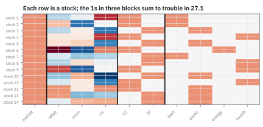
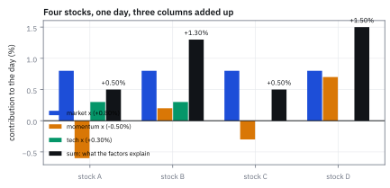
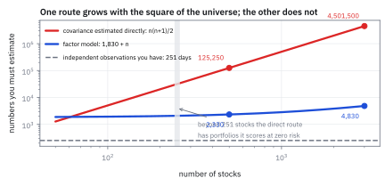
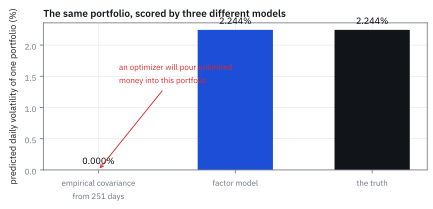

26.1 The Factor Model Equation and Three Ways to Read It
ผลตอบแทนของหุ้นทุกตัวคือแรงร่วมไม่กี่ตัวคูณ loading บวกส่วนที่เป็นของหุ้นตัวนั้นเอง สมการเดียวนี้อ่านได้สามทาง และแยกทั้งกำไรขาดทุนและความเสี่ยงของพอร์ตออกเป็นสองก้อน
พอร์ต long–short หุ้นสี่ตัวถือ A \$3 ล้าน B −\$2 ล้าน C \$4 ล้าน และ D −\$5 ล้าน เงินฝั่งซื้อเท่าฝั่งขายพอดี วันนี้ตลาดขึ้น 0.80% แต่พอร์ตขาดทุน \$13,000 ผู้จัดการพอร์ตบอกว่า “พอร์ตเป็นกลางต่อตลาดแล้ว ขาดทุนนี้จึงเป็นวันที่เลือกหุ้นพลาด” ข้อสรุปนี้ถูกไหม?
ลองตอบก่อนเปิดเฉลย
ผิด การเลือกหุ้นทำเงินได้ \$53,000 ส่วนที่ขาดทุนคือ factor ที่เสีย \$66,000 พอร์ตนี้ไม่มี exposure ต่อตลาดจริง แต่มี exposure ต่อ momentum \$13.8 ล้าน จาก GMV \$14 ล้าน วันนี้ momentum ลง 0.50% จึงเสีย \$69,000 และ tech ได้คืน \$3,000 เงินสองฝั่งที่เท่ากันไม่ได้แปลว่าไม่มีเดิมพันซ่อนอยู่ หน้านี้แยกตัวเลขทั้งหมดนี้ให้ดูทีละบรรทัด
สิ่งที่เราจะสร้าง
15.3 สร้าง model หลายปัจจัยไว้แล้ว ทั้ง regression ของกองทุนหนึ่งกอง และ covariance $B\Sigma_fB^{\mathsf T}+D$ ของหุ้นหลายร้อยตัว บทที่ 26 และ 27 ใช้ model เดียวกันเป็นแกนของทุกอย่าง จึงเขียนแบบ matrix ทั้งก้อน หุ้น $n$ ตัว factor $m$ ตัว ใช้ $\boldsymbol\Omega_f$ แทน $\Sigma_f$ และ $\boldsymbol\Omega_\epsilon$ แทน $D$ ความหมายเหมือนเดิมทุกตัว
เราจะเขียนสมการพร้อมข้อสมมติ คำนวณหุ้นสี่ตัวในวันเดียวด้วยมือ แล้วอ่านสมการสามทาง คือทีละหุ้น ทุกหุ้นพร้อมกันในวันเดียว และทั้งพอร์ต ทางที่สามตอบคำถามข้างบน เพราะมันแยกกำไรขาดทุนและความเสี่ยงของพอร์ตเป็นส่วน factor กับส่วนเฉพาะตัว จากนั้นนับว่าทำไมต้องมีโครงสร้างนี้ และจบที่พอร์ตที่ไม่มี exposure ต่อ factor ใดเลย ซึ่งเป็นประตูไป 26.2
ศัพท์ที่ใช้ในหัวข้อนี้
- Factor return
- ผลตอบแทนของแรงร่วมหนึ่งตัวในหนึ่งวัน เช่น market วันนี้ +0.80% หุ้นทุกตัวเห็นตัวเลขเดียวกัน ต่างกันแค่รับมากหรือน้อยตาม loading ของตัวเอง
- Loading และ loadings matrix
- loading บอกว่าหุ้นรับแรงจาก factor หนึ่งมากแค่ไหน วางเป็นตาราง $\mathbf B$ ขนาด $n\times m$ แถวละหุ้น คอลัมน์ละ factor ใน model ที่ใช้ข้อมูลบริษัท loading รู้ก่อนวันเริ่ม ไม่ต้องประมาณ
- Idiosyncratic return
- ส่วนของผลตอบแทนที่เหลือหลังหักแรงร่วม เป็นเรื่องของหุ้นตัวนั้นล้วน ๆ เช่นงบออกดีกว่าคาด ใช้เป็นที่มาของกำไรจากการเลือกหุ้น
- Factor exposure
- ผลรวมของ loading ถ่วงด้วยเงินที่ถือ $\mathbf b=\mathbf B^{\mathsf T}\mathbf w$ บอกว่าทั้งพอร์ตรับแรงจากแต่ละ factor กี่ดอลลาร์ ย่อพอร์ตหุ้นหลายพันตัวให้เหลือตัวเลขเท่าจำนวน factor
- NMV และ GMV
- NMV คือเงินฝั่งซื้อลบฝั่งขาย GMV คือผลรวมของขนาดทุกตำแหน่งโดยไม่สนเครื่องหมาย พอร์ตที่ NMV เป็นศูนย์เรียกว่า dollar-neutral ซึ่งไม่ได้แปลว่าไม่มี exposure ต่อ factor
- Strict factor model
- model ที่สมมติว่าส่วนเฉพาะตัวของหุ้นต่างตัวไม่สัมพันธ์กันเลย $\boldsymbol\Omega_\epsilon$ จึงเป็น diagonal ถ้ายอมให้มีบางคู่สัมพันธ์กัน เรียกว่า approximate factor model
สัญลักษณ์และหน่วย
| สัญลักษณ์ | ความหมาย | หน่วย |
|---|---|---|
| $n,\ m,\ T$ | จำนวนหุ้น จำนวน factor และจำนวนวันของข้อมูล | นับ |
| $\mathbf r_t$ | ผลตอบแทนส่วนเกินของหุ้นทุกตัวในวัน $t$ (25.1) | % ต่อวัน |
| $\boldsymbol\alpha$ | ผลตอบแทนคาดหวังส่วนที่ factor ไม่ได้ให้ (หน้านี้ตั้งเป็นศูนย์) | % ต่อวัน |
| $\mathbf B,\ B_{ij}$ | loadings matrix $n\times m$ และ loading ของหุ้น $i$ ต่อ factor $j$ | ไม่มีหน่วย |
| $\mathbf f_t,\ \boldsymbol\epsilon_t$ | factor return ($m$ ตัว) และ idiosyncratic return ($n$ ตัว) | % ต่อวัน |
| $\mathbf w,\ \mathbf b$ | เงินที่ถือแต่ละหุ้น (ติดลบคือ short) และ factor exposure $\mathbf B^{\mathsf T}\mathbf w$ | \$ ล้าน |
| $\boldsymbol\Omega_f,\ \boldsymbol\Omega_\epsilon,\ \boldsymbol\Omega_r$ | covariance ของ factor return ($m\times m$) ของส่วนเฉพาะตัว ($n\times n$) และของผลตอบแทนหุ้น | %² ต่อวัน |
| $\sigma_i$ | ความผันผวนเฉพาะตัวของหุ้น $i$ ($\sigma_i^2$ อยู่บนแนวทแยงของ $\boldsymbol\Omega_\epsilon$) | % ต่อวัน |
ขั้นที่ 1 — สมการ และสิ่งที่มันสมมติ
เริ่มจากนิยาม ผลตอบแทนส่วนเกินของหุ้นทุกตัวในวัน $t$ เขียนเป็นสามก้อน ก้อนแรกคงที่ ก้อนที่สองมาจากแรงร่วม ก้อนที่สามเป็นของหุ้นแต่ละตัว สามบรรทัดล่างคือข้อสมมติที่ทำให้สมการนี้มีประโยชน์ ไม่ใช่ผลที่พิสูจน์ได้
$\mathbf B$ มี $n$ แถว $m$ คอลัมน์ โดย $m$ เล็กกว่า $n$ มาก เช่นหุ้น 500 ตัวกับ factor 60 ตัว $\mathbf f_t$ จึงเป็นตัวสุ่มไม่กี่ตัวที่ขับหุ้นทั้งตลาด ส่วน $\boldsymbol\epsilon_t$ มีตัวละหุ้น $\boldsymbol\alpha$ คือผลตอบแทนคาดหวังที่ factor ไม่ได้ให้ 26.2 จะแยกว่ามันเป็นของจริงแค่ไหน หน้านี้ตั้งเป็นศูนย์
ข้อสมมติที่หนักที่สุดคือบรรทัดสุดท้าย ส่วนเฉพาะตัวของหุ้นสองตัวไม่สัมพันธ์กัน แปลว่าการขยับร่วมกันทุกอย่างต้องผ่าน factor ถ้า model ขาด factor ที่ควรมี การขยับร่วมส่วนนั้นจะไปโผล่เป็น correlation ระหว่างส่วนเฉพาะตัว ซึ่งเป็นร่องรอยที่ 27.4 ใช้ตรวจ
ขั้นที่ 2 — หุ้นสี่ตัว หนึ่งวัน
โจทย์ให้อะไรมาบ้าง: หุ้น A, B, C, D กับ factor สามตัว คือ market ที่ทุกหุ้นมี loading 1, momentum ที่ loading เป็น z-score ของผลตอบแทนย้อนหลังราวหนึ่งปี และ tech ที่เป็น 1 ถ้าหุ้นอยู่ในกลุ่ม tech (A กับ B) วันนี้ factor return คือ market +0.80% momentum −0.50% tech +0.30% ส่วนเฉพาะตัวของสี่หุ้นคือ +0.40%, −0.25%, +0.15% และ −0.60% ตัวเลขทั้งหมดสมมติ และใช้ต่อทั้งบท
คำตอบ: ผลตอบแทนวันนี้คือ 0.90%, 1.05%, 0.65% และ 0.90% B กับ D มี momentum ติดลบทั้งคู่ จึงได้ประโยชน์จากวันที่ momentum ร่วง แต่ B อยู่ใน tech ที่ขึ้น 0.30% ขณะที่ D โดนข่าวเฉพาะตัว −0.60% ผลตอบแทนที่เห็นเป็นผลรวมของหลายเรื่องเสมอ และสมการนี้แยกมันออกจากกันได้
ตรวจเองใน 10 วินาที: A กับ D ได้ 0.90% เท่ากันทั้งที่ที่มาต่างกันหมด A ได้ $0.80-0.60+0.30=0.50$ จาก factor บวก 0.40 ของตัวเอง ส่วน D ได้ $0.80+0.70=1.50$ จาก factor ลบ 0.60 ของตัวเอง
Figure 26.1a — หน้าตาของ loadings matrix จริง แบ่งเป็นบล็อก

ขั้นที่ 3 — อ่านแบบที่หนึ่ง: ทีละหุ้น
ตอนนี้อ่านสมการเดิมสามทาง ทางแรกมองทีละหุ้น ถ้ารู้ factor return ของวันนี้แล้ว หุ้น $i$ ควรได้เท่าไร ส่วนเฉพาะตัวมีค่าเฉลี่ยศูนย์จึงหายไป เหลือผลคูณจุด (6.5) ของแถว $i$ ของ $\mathbf B$ กับ $\mathbf f$
ภาพที่ควรมีในหัวคือกราฟ วงกลม $m$ วงข้างบนคือ factor สี่เหลี่ยม $n$ อันข้างล่างคือหุ้น เส้นเชื่อมมีน้ำหนักเท่ากับ loading model ของทั้งภูมิภาคมีหุ้นราวหมื่นตัวกับ factor ราวร้อยตัว แต่หุ้นหนึ่งตัวแตะแค่ market, industry และ country อย่างละตัว กับ style อีกสิบกว่า ช่องส่วนใหญ่ของ $\mathbf B$ จึงเป็นศูนย์
ทางนี้ตอบคำถามระดับหุ้น เช่นข่าวดีของ A วันนี้ใหญ่แค่ไหน จาก 0.90% ที่เห็น มี 0.50 จุดที่ใครถือหุ้นที่ loading แบบ A ก็ได้เหมือนกัน เหลือ 0.40 จุดที่เป็นของ A เอง
ขั้นที่ 4 — อ่านแบบที่สอง: ทุกหุ้นในวันเดียว
ทางที่สองมองทุกหุ้นพร้อมกัน จัดผลคูณ $\mathbf B\mathbf f$ ตามคอลัมน์แทนแถว (7.3) ส่วนที่ factor อธิบายได้ของทุกหุ้นคือผลรวมของคอลัมน์ของ $\mathbf B$ ถ่วงด้วย factor return ของวันนั้น
คอลัมน์ market เลื่อนทุกหุ้นขึ้น 0.80 เท่ากัน คอลัมน์ momentum ถูกคูณด้วยค่าติดลบ หุ้นที่ momentum สูงอย่าง A จึงเสีย 0.60 จุด ส่วน D ได้ 0.70 จุด คอลัมน์ tech ยก A กับ B ขึ้น 0.30 ผลรวมคือ (0.50, 1.30, 0.50, 1.50)
ทางนี้ทำให้เห็นมิติ ผลตอบแทนของหุ้นสี่ตัวเป็นจุดใน 4 มิติ แต่ส่วนของ factor ถูกขังใน range ของ $\mathbf B$ (7.5) ซึ่งมีแค่ 3 มิติ ที่หุ้น 500 ตัวกับ factor 60 ตัว ส่วนของ factor อยู่ใน 60 มิติ อีก 440 มิติเป็นของส่วนเฉพาะตัวทั้งหมด ที่ว่างนี้คือที่อยู่ของ alpha ชนิดที่มีค่าที่สุดใน 26.2
Figure 26.1b — ส่วนของ factor ในวันหนึ่งคือผลรวมของคอลัมน์

ขั้นที่ 5 — อ่านแบบที่สาม: ทั้งพอร์ต
ทางที่สามคือทางที่ใช้ทุกวัน คูณสมการด้วยเงินที่ถือ $\mathbf w$ แล้วจับกลุ่มใหม่ กำไรขาดทุนของพอร์ตแยกเป็นสองก้อน และก้อนแรกขึ้นกับพอร์ตผ่าน vector $\mathbf b$ ที่ยาวแค่ $m$ ตัว ไม่ว่าจะถือหุ้นกี่ตัว
บรรทัดที่สองใช้ $\mathbf w^{\mathsf T}\mathbf B=(\mathbf B^{\mathsf T}\mathbf w)^{\mathsf T}$ (7.2) ก้อนแรกเรียกว่า factor PnL ก้อนที่สองเรียกว่า idiosyncratic PnL exposure ต่อ market คือ NMV พอดี เพราะคอลัมน์ market เป็น 1 ทุกแถว พอร์ตนี้ NMV เป็นศูนย์จึงไม่มี exposure ต่อตลาดจริง
แต่ momentum รวมได้ \$13.8 ล้าน หุ้นที่ซื้อ (A, C) มี momentum บวก หุ้นที่ขาย (B, D) มี momentum ลบ เช่น $-0.4\times(-2)=+0.8$ และ $-1.4\times(-5)=+7.0$ ทุกตำแหน่งเดิมพันทางเดียวกันว่า momentum จะขึ้น โดยไม่มีใครตั้งใจ
ขั้นที่ 6 — แยกกำไรขาดทุนของวันนี้
โจทย์ให้อะไรมาบ้าง: exposure ของขั้นที่ 5 และตัวเลขวันนี้ของขั้นที่ 2 เงินเป็น \$ ล้าน ผลตอบแทนเป็น % หน่วยของผลคูณจึงเป็น \$1 ล้าน × 1% = \$10,000
คำตอบ: factor PnL คือ −\$66,000 แยกเป็น market \$0, momentum −\$69,000 และ tech +\$3,000 idiosyncratic PnL คือ +\$53,000 มากกว่าครึ่งมาจากการขาย D ที่โดนข่าวร้าย (+\$30,000) รวมทั้งพอร์ต −\$13,000 คำพูดของผู้จัดการพอร์ตผิดทั้งสองส่วน การเลือกหุ้นวันนี้ดีมาก ที่เสียคือเดิมพัน momentum ที่ไม่รู้ตัวว่าถืออยู่
ตรวจเองใน 10 วินาที: คูณเงินกับผลตอบแทนตรง ๆ $3(0.90)-2(1.05)+4(0.65)-5(0.90)=2.70-2.10+2.60-4.50=-1.30$ ได้เท่ากัน สองทางเป็นผลบวกเดียวกันที่จัดกลุ่มต่างกัน จึงต้องตรงกันเสมอ
ขั้นที่ 7 — ความเสี่ยงก็แยกเป็นสองก้อน
กำไรขาดทุนแยกได้แล้ว ความเสี่ยงล่ะ? หา covariance ของ $\mathbf r=\boldsymbol\alpha+\mathbf B\mathbf f+\boldsymbol\epsilon$ ค่าคงที่ $\boldsymbol\alpha$ ไม่มีผลต่อ covariance ที่เหลือคือผลบวกของสองก้อนที่ไม่สัมพันธ์กันตามข้อสมมติของขั้นที่ 1
เลข $\mathbf 0$ ในบรรทัดแรกคือพจน์ไขว้สองก้อน $\mathbf B\operatorname{cov}(\mathbf f,\boldsymbol\epsilon)$ กับตัว transpose ของมัน ซึ่งเป็นศูนย์เพราะ factor ไม่เกี่ยวกับส่วนเฉพาะตัว บรรทัดที่สองคือกฎของ 8.2 ช่อง $(i,k)$ ของ $\operatorname{cov}(\mathbf B\mathbf f)$ คือ $\sum_{j,l}B_{ij}[\boldsymbol\Omega_f]_{jl}B_{kl}$ เหมือนเดิมกับ 15.3 ขั้นที่ 5
บรรทัดสุดท้ายได้จากการคูณ $\mathbf w$ สองข้าง แล้วใช้ $\mathbf b=\mathbf B^{\mathsf T}\mathbf w$ อีกครั้ง ความเสี่ยงจาก factor ขึ้นกับพอร์ตผ่าน exposure $m$ ตัวเท่านั้น ส่วนความเสี่ยงเฉพาะตัวคือ $\sum_iw_i^2\sigma_i^2$ เพราะ $\boldsymbol\Omega_\epsilon$ เป็น diagonal
ขั้นที่ 8 — ความเสี่ยงของพอร์ตในโจทย์
โจทย์ให้อะไรมาบ้าง: ความผันผวนรายวันของ factor คือ market 1.00% momentum 0.35% tech 0.55% correlation ระหว่าง market กับ momentum −0.20, market กับ tech +0.50, momentum กับ tech −0.10 ความผันผวนเฉพาะตัวของ A, B, C, D คือ 1.80%, 2.20%, 1.50% และ 2.60% ต่อวัน (สมมติ) เพราะ $b_{\rm mkt}=0$ แถวและคอลัมน์ของ market ใน $\boldsymbol\Omega_f$ จึงไม่ถูกใช้ ให้ $\omega_{mm}$, $\omega_{tt}$, $\omega_{mt}$ เป็นช่อง momentum, tech และช่องไขว้ของ $\boldsymbol\Omega_f$ และเรียกสองก้อนของขั้นที่ 7 ว่า $v_f=\mathbf b^{\mathsf T}\boldsymbol\Omega_f\mathbf b$ กับ $v_\epsilon=\mathbf w^{\mathsf T}\boldsymbol\Omega_\epsilon\mathbf w$
คำตอบ: คูณรากที่สองด้วย \$10,000 ความเสี่ยงจาก factor คือ $\sqrt{23.1001}=4.8063$ หรือ \$48,063 ต่อวัน ความเสี่ยงเฉพาะตัวคือ $\sqrt{253.52}=15.9223$ หรือ \$159,223 รวมทั้งพอร์ต \$166,319 ต่อวัน ส่วนเฉพาะตัวครอง $253.52/276.6201=91.65\%$ ของ variance เพราะพอร์ตมีแค่สี่หุ้น ถ้ากระจายเงินก้อนเดิมไปหุ้นหลายร้อยตัว variance เฉพาะตัวจะลดลงตาม 1/จำนวนหุ้น (3.1) ขณะที่เดิมพัน momentum ไม่ลดถ้ายังเลือกหุ้นแบบเดิม สัดส่วนจึงพลิกไปทาง factor ได้ง่าย
ตรวจเองใน 10 วินาที: ความผันผวนไม่บวกกันตรง ๆ $48{,}063+159{,}223=207{,}286$ ไม่ใช่คำตอบ ที่ถูกคือ $\sqrt{48{,}063^2+159{,}223^2}=166{,}319$ เพราะสองก้อนไม่สัมพันธ์กัน variance จึงบวกกันได้ ความผันผวนบวกไม่ได้
ขั้นที่ 9 — ทำไมต้องบังคับให้ทุกการขยับร่วมผ่าน factor
ทางเลือกอีกทางคือประมาณ covariance ของทุกคู่ตรง ๆ จากข้อมูลหนึ่งปี 252 วันทำการ (1.1) กับหุ้น 500 ตัว 15.3 ขั้นที่ 7 นับให้ดูแล้วสำหรับ model ที่ต้องประมาณ loading เอง ที่นี่ loading เป็นข้อมูลบริษัทที่รู้อยู่แล้ว จึงเหลือต้องประมาณแค่ $\boldsymbol\Omega_f$ กับ variance เฉพาะตัว $n$ ตัว
ปัญหาจริงไม่ใช่แค่ตัวเลขเยอะ sample covariance จาก 252 วันมี rank ไม่เกิน 251 เพราะหักค่าเฉลี่ยแล้วข้อมูลเหลือ 251 แถวที่อิสระกัน (15.3 ขั้นที่ 8) หุ้น 500 ตัวจึงมีอย่างน้อย 249 ทิศที่ข้อมูลบอกว่าความเสี่ยงเป็นศูนย์พอดี และ optimizer จะเทเงินลงทิศเหล่านั้นก่อน
covariance ของ factor model ไม่มีทิศแบบนั้น ก้อน $\mathbf b^{\mathsf T}\boldsymbol\Omega_f\mathbf b$ ไม่ติดลบเพราะ $\boldsymbol\Omega_f$ เป็น covariance และก้อนเฉพาะตัวบวก $w_i^2\sigma_i^2$ ทุกครั้งที่ถือหุ้นสักตัว บรรทัดสุดท้ายจึงเป็นบวกเสมอ ไม่ว่าข้อมูลจะสั้นแค่ไหน
Figure 26.1c — จำนวนตัวเลขที่ต้องประมาณ สองทาง

Figure 26.1d — พอร์ตที่ข้อมูลบอกว่าไม่มีความเสี่ยง

ขั้นที่ 10 — พอร์ตที่ไม่มี exposure ต่อ factor ใดเลย
โจทย์ให้อะไรมาบ้าง: หาพอร์ต $\mathbf u$ ที่ $\mathbf B^{\mathsf T}\mathbf u=\mathbf 0$ ได้สามสมการ คือ $u_A+u_B+u_C+u_D=0$, $1.2u_A-0.4u_B+0.6u_C-1.4u_D=0$ และ $u_A+u_B=0$ ตั้ง $u_A=1$ สมการที่สามให้ $u_B=-1$ สมการแรกจึงเหลือ $u_D=-u_C$ แทนลงสมการที่สองได้ $1.6+2u_C=0$
คำตอบ: ซื้อ A \$1 ล้าน ขาย B \$1 ล้าน ขาย C \$0.8 ล้าน และซื้อ D \$0.8 ล้าน พอร์ตนี้ไม่มี exposure ต่อ factor ไหนเลย แต่ยังเสี่ยง \$37,211 ต่อวัน ซึ่งเป็นความเสี่ยงเฉพาะตัวทั้งหมด ในโลกสี่หุ้นสาม factor นี่คือทิศเดียวที่ทำแบบนี้ได้ ทุกคำตอบอื่นเป็นผลคูณของ $\mathbf u$ 26.2 จะใช้ทิศนี้แยก alpha
ตรวจเองใน 10 วินาที: $\mathbf u$ มีสี่ตัวแต่ต้องทำให้สามสมการเป็นศูนย์ จึงเหลืออิสระแค่หนึ่งมิติ ตรงกับ $n-m=4-3=1$ ของขั้นที่ 4
คำถามที่ควรถามออกมาดัง ๆ
loading มาจากไหน ถ้าไม่ต้องประมาณ? ขึ้นกับชนิดของ model ชนิดแรกใช้คุณสมบัติของบริษัทเป็น loading เช่นกลุ่มอุตสาหกรรมและ momentum แล้วประมาณ factor return ทุกวัน (27.1) ชนิดที่สองรู้แค่ผลตอบแทน ต้องประมาณทั้ง loading และ factor return จากข้อมูล เช่นด้วย PCA ของ 17.4 ชนิดที่สามใช้ตัวแปรเศรษฐกิจเป็น factor return แล้วประมาณ loading ด้วย regression ตามเวลาแบบ 15.3 สิ่งที่ต้องประมาณเปลี่ยนไปตามชนิด
factor return มาจากไหน ถ้าไม่มีใครประกาศ? ใน model ชนิดแรก มันคือคำตอบของ regression ข้ามหุ้นในวันเดียว ซึ่งกลายเป็นผลตอบแทนของพอร์ตที่ซื้อได้จริง 26.5 เตรียมเครื่องมือ และ 27.1 ทำให้ดูเต็มขั้นตอน หน้านี้สมมติว่ารู้ $\mathbf f$ แล้ว
ความผิดที่ทำให้อ่านพอร์ตผิด
คิดว่า dollar-neutral คือไม่มีความเสี่ยงจาก factor: พอร์ตในโจทย์มี NMV ศูนย์และ exposure ต่อ market ศูนย์ แต่มี exposure ต่อ momentum \$13.8 ล้าน บน GMV \$14 ล้าน คือ 98.6% ของขนาดพอร์ตเป็นเดิมพันเดียว คนเลือกหุ้นทีละตัวมักสะสม exposure แบบนี้ เพราะเหตุผลที่ใช้เลือกหุ้นเกี่ยวกับ style factor อยู่แล้ว
บวกความผันผวนของสองก้อนตรง ๆ: ได้ \$207,286 ต่อวัน สูงกว่าค่าจริง \$166,319 อยู่ 24.6% ความผิดนี้ทำให้วงเงินความเสี่ยงถูกใช้ไม่เต็ม และทำให้ส่วนแบ่งความเสี่ยงของแต่ละก้อนผิดทั้งหมด
ใช้ loading ที่ประทับวันผิด: ผู้ให้บริการข้อมูลส่วนใหญ่ประทับวันที่ $t$ ให้ข้อมูลที่รู้ตอนจบช่วงวัน $t-1$ ถึง $t$ loading ที่ใช้อธิบายผลตอบแทนของวัน $t$ ต้องเป็นของที่รู้ก่อนวัน $t$ เริ่ม ถ้าเลื่อนผิดหนึ่งวัน ผลตอบแทนของวันนั้นจะรั่วเข้าไปใน loading แล้ว model ดูเหมือนอธิบายผลตอบแทนได้ดีเกินจริง
ใช้ทำอะไรบนโต๊ะจริง
รายงานตอนเช้าของโต๊ะหุ้นคือ vector $\mathbf b$ ทั้ง 60 ถึง 100 ตัวพร้อมเพดานของแต่ละตัว risk manager กับผู้จัดการพอร์ตคุยกันด้วยตัวเลขชุดนี้แทนการคุยทีละหุ้นหลายพันตัว เลข 13.8 ของขั้นที่ 5 จะถูกจับได้ในเช้าวันแรกในระบบแบบนี้ แต่รอดสายตาได้ทั้งเดือนในระบบที่ดูแค่ NMV กับ GMV
สามโจทย์ตรวจความเข้าใจ
1. วันถัดมา factor return คือ market −1.00% momentum +0.40% tech −0.20% และส่วนเฉพาะตัวคือ +0.10%, +0.30%, −0.20%, +0.05% พอร์ตเดิม กำไรขาดทุนแยกเป็นอะไรบ้าง
เฉลย
factor PnL $=0(-1.00)+13.8(0.40)+1(-0.20)=5.32$ หรือ +\$53,200 idiosyncratic PnL $=3(0.10)-2(0.30)+4(-0.20)-5(0.05)=0.30-0.60-0.80-0.25=-1.35$ หรือ −\$13,500 รวม +\$39,700 ตรวจตรง ๆ ผลตอบแทนหุ้นคือ −0.62%, −1.06%, −0.96%, −1.51% และ $3(-0.62)-2(-1.06)+4(-0.96)-5(-1.51)=3.97$ ตลาดลง 1% แต่พอร์ตได้เงิน เพราะเดิมพัน momentum พลิกมาเข้าข้าง
2. ถ้าอยากให้ exposure ต่อ momentum เป็นศูนย์โดยปรับเฉพาะตำแหน่งของ C ต้องถือ C เท่าไร แล้ว exposure ต่อ market จะเป็นเท่าไร
เฉลย
ต้องการ $1.2(3)-0.4(-2)+0.6c-1.4(-5)=11.4+0.6c=0$ จึงได้ $c=-19$ คือขาย C \$19 ล้าน แต่ NMV กลายเป็น $3-2-19-5=-23$ คือ exposure ต่อ market −\$23 ล้าน ปุ่มเดียวแก้สอง exposure พร้อมกันไม่ได้ ทิศที่ทำให้ทุก exposure เป็นศูนย์คือ $\mathbf u$ ของขั้นที่ 10 เท่านั้น
3. หุ้น 3,000 ตัว model 80 factor ข้อมูลสองปี 504 วัน นับตัวเลขที่ต้องประมาณทั้งสองทาง และทิศที่ sample covariance บอกว่าไม่มีความเสี่ยง
เฉลย
ตรง ๆ $3{,}000(3{,}001)/2=4{,}501{,}500$ factor model $80(81)/2+3{,}000=3{,}240+3{,}000=6{,}240$ น้อยกว่า 721.4 เท่า sample covariance มี rank ไม่เกิน 503 จึงมีทิศความเสี่ยงศูนย์อย่างน้อย $3{,}000-503=2{,}497$ ทิศ ข้อมูลสองปีเห็นความเสี่ยงได้แค่ 503 ทิศจาก 3,000 ทิศ
คำนวณซ้ำด้วย JavaScript
รันใน Node.js ได้โดยไม่ต้องติดตั้งอะไร โค้ดคำนวณผลตอบแทนหุ้นสี่ตัว exposure การแยกกำไรขาดทุนและความเสี่ยงของพอร์ต พอร์ตที่เป็นกลางต่อทุก factor จำนวนตัวเลขที่ต้องประมาณ และโจทย์ท้ายหน้า จากนั้นสุ่มหุ้น 40 ตัว 20 วันด้วย seed ตายตัว หาพอร์ตที่ข้อมูลมองไม่เห็น แล้วเทียบความเสี่ยงจากข้อมูลกับความเสี่ยงจริง ตรวจรูปร่างของ matrix ความผันผวนที่ต้องเป็นบวก และ correlation ที่ต้องสมมาตร
const {sqrt, abs, log, cos, PI} = Math;
function checkMatrix(A, name) {
if (!Array.isArray(A) || A.length === 0 || !A.every(row => Array.isArray(row) && row.length === A[0].length && row.every(Number.isFinite))) {
throw new TypeError(name + ' must be a non-empty rectangular matrix of finite numbers');
}
return [A.length, A[0].length];
}
function checkVector(x, n, name) {
if (!Array.isArray(x) || x.length !== n || !x.every(Number.isFinite)) throw new TypeError(name + ' must hold ' + n + ' finite numbers');
return x;
}
const dot = (a, b) => a.reduce((s, v, i) => s + v * b[i], 0);
const matVec = (A, x) => A.map(row => dot(row, x));
const transpose = A => A[0].map((_, j) => A.map(row => row[j]));
const UNIT = 1e4; // one million dollars times 1% is 10,000 dollars
// One day of r = B f + eps (alpha = 0 on this page).
function oneDay(B, f, eps) {
const [n, m] = checkMatrix(B, 'Loadings B');
checkVector(f, m, 'Factor returns');
checkVector(eps, n, 'Idiosyncratic returns');
const factorPart = matVec(B, f);
return {factorPart, r: factorPart.map((v, i) => v + eps[i])};
}
// Reading 3: the book collapses to its exposures b = B'w; PnL splits into b'f and w'eps.
function pnlSplit(B, w, f, eps) {
const [n] = checkMatrix(B, 'Loadings B');
checkVector(w, n, 'Positions');
const b = matVec(transpose(B), w), {r} = oneDay(B, f, eps);
return {b, nmv: w.reduce((s, x) => s + x, 0), gmv: w.reduce((s, x) => s + abs(x), 0),
perFactor: b.map((x, j) => x * f[j] * UNIT), perStock: w.map((x, i) => x * eps[i] * UNIT),
factor: dot(b, f) * UNIT, idio: dot(w, eps) * UNIT, direct: dot(w, r) * UNIT};
}
function covarianceFromVols(vols, corr) {
const [k, k2] = checkMatrix(corr, 'Correlation');
if (k !== k2 || !Array.isArray(vols) || vols.length !== k) throw new RangeError('Need one volatility per row of a square correlation matrix');
if (!vols.every(v => Number.isFinite(v) && v > 0)) throw new RangeError('Volatilities must be positive');
for (let i = 0; i < k; i++) {
if (corr[i][i] !== 1) throw new RangeError('Correlation diagonal must be 1');
for (let j = 0; j < i; j++) if (corr[i][j] !== corr[j][i] || abs(corr[i][j]) > 1) throw new RangeError('Correlation must be symmetric with entries between -1 and 1');
}
return corr.map((row, i) => row.map((c, j) => c * vols[i] * vols[j]));
}
// Risk splits the same way: b' Omega_f b + w' Omega_eps w (diagonal Omega_eps).
function riskSplit(B, w, Of, idioVols) {
const [n] = checkMatrix(B, 'Loadings B');
checkVector(w, n, 'Positions');
checkVector(idioVols, n, 'Idiosyncratic volatilities');
if (!idioVols.every(s => s > 0)) throw new RangeError('Every idiosyncratic volatility must be positive');
const b = matVec(transpose(B), w);
const factorVar = dot(b, matVec(Of, b)), idioVar = w.reduce((s, x, i) => s + x * x * idioVols[i] ** 2, 0);
return {factorVar, idioVar, factorUSD: sqrt(factorVar) * UNIT, idioUSD: sqrt(idioVar) * UNIT,
totalUSD: sqrt(factorVar + idioVar) * UNIT, idioShare: idioVar / (factorVar + idioVar)};
}
function counts(n, m, T) {
if (![n, m, T].every(Number.isInteger) || n < 1 || m < 1 || T < 2) throw new RangeError('Need whole numbers n, m >= 1 and T >= 2');
const direct = n * (n + 1) / 2, factor = m * (m + 1) / 2 + n;
return {direct, factor, ratio: direct / factor, zeroDirections: Math.max(0, n - (T - 1))};
}
// Seeded normals (mulberry32 + Box-Muller) for the rank demonstration.
function normals(seed) {
let a = seed >>> 0;
const u = () => {
a = (a + 0x6D2B79F5) >>> 0;
let t = Math.imul(a ^ (a >>> 15), a | 1);
t ^= t + Math.imul(t ^ (t >>> 7), t | 61);
return (((t ^ (t >>> 14)) >>> 0) + 0.5) / 4294967296;
};
return () => sqrt(-2 * log(u())) * cos(2 * PI * u());
}
// n stocks, m factors (1% a day each), idio 2% a day, T days: the loadings and the T x n returns.
function simulate(n, m, T, seed) {
const z = normals(seed);
const B = Array.from({length: n}, () => Array.from({length: m}, z));
const R = Array.from({length: T}, () => {
const f = Array.from({length: m}, () => 1 * z());
return B.map(row => dot(row, f) + 2 * z());
});
return {B, R};
}
// Rank of the de-meaned data and one unit-length portfolio the data cannot see.
function blindPortfolio(R) {
const [T, n] = checkMatrix(R, 'Returns');
if (T < 2) throw new RangeError('Need at least two days');
const mean = R[0].map((_, j) => R.reduce((s, row) => s + row[j], 0) / T);
const D = R.map(row => row.map((v, j) => v - mean[j]));
const M = D.map(row => row.slice()), pivots = [];
let rank = 0;
for (let c = 0; c < n && rank < T; c++) {
let p = rank;
for (let i = rank + 1; i < T; i++) if (abs(M[i][c]) > abs(M[p][c])) p = i;
if (abs(M[p][c]) < 1e-9) continue;
[M[rank], M[p]] = [M[p], M[rank]];
const piv = M[rank][c];
for (let j = 0; j < n; j++) M[rank][j] /= piv;
for (let i = 0; i < T; i++) if (i !== rank && M[i][c] !== 0) {
const g = M[i][c];
for (let j = 0; j < n; j++) M[i][j] -= g * M[rank][j];
}
pivots.push(c);
rank++;
}
const free = [...Array(n).keys()].find(c => !pivots.includes(c));
if (free === undefined) throw new RangeError('Every direction is seen: need more stocks than days');
const v = new Array(n).fill(0);
v[free] = 1;
pivots.forEach((c, row) => { v[c] = -M[row][free]; });
const len = sqrt(dot(v, v));
const x = v.map(t => t / len);
const sampleVar = D.reduce((s, row) => s + dot(row, x) ** 2, 0) / (T - 1);
return {rank, x, sampleVar};
}
const B = [[1, 1.2, 1], [1, -0.4, 1], [1, 0.6, 0], [1, -1.4, 0]];
const f = [0.80, -0.50, 0.30], eps = [0.40, -0.25, 0.15, -0.60], w = [3, -2, 4, -5];
const Of = covarianceFromVols([1.00, 0.35, 0.55], [[1, -0.20, 0.50], [-0.20, 1, -0.10], [0.50, -0.10, 1]]);
const idioVols = [1.80, 2.20, 1.50, 2.60];
const day = oneDay(B, f, eps), book = pnlSplit(B, w, f, eps), risk = riskSplit(B, w, Of, idioVols);
const u = [1, -1, -0.8, 0.8], neutral = riskSplit(B, u, Of, idioVols);
const sim = simulate(40, 3, 20, 26), blind = blindPortfolio(sim.R);
const bx = matVec(transpose(sim.B), blind.x);
const trueVar = dot(bx, bx) + 4 * dot(blind.x, blind.x);
const day2 = pnlSplit(B, w, [-1.00, 0.40, -0.20], [0.10, 0.30, -0.20, 0.05]);
console.log(JSON.stringify({
factorPart: day.factorPart, r: day.r,
book: {b: book.b, nmv: book.nmv, gmv: book.gmv, perFactor: book.perFactor, perStock: book.perStock,
factor: book.factor, idio: book.idio, direct: book.direct, momShareOfGMV: book.b[1] / book.gmv},
risk: {...risk, sumOfVols: risk.factorUSD + risk.idioUSD},
neutral: {Bu: matVec(transpose(B), u), factorVar: neutral.factorVar, idioVar: neutral.idioVar, usd: neutral.totalUSD},
counts: counts(500, 60, 252), exercise3: counts(3000, 80, 504),
exercise1: {factor: day2.factor, idio: day2.idio, direct: day2.direct},
exercise2: {c: -(1.2 * 3 - 0.4 * -2 - 1.4 * -5) / 0.6, marketAfter: 3 - 2 - 19 - 5},
rankDemo: {n: 40, T: 20, rank: blind.rank, sampleVar: blind.sampleVar, trueVol: sqrt(trueVar)}
}));ที่มาที่ไป
สมการแบบนี้เก่ากว่าการเงิน Charles Spearman ใช้ factor เดียวอธิบายคะแนนสอบหลายวิชาในปี 1904 ในการเงิน William Sharpe ใช้ model ปัจจัยเดียวในทศวรรษ 1960 และ Stephen Ross ขยายเป็นหลายปัจจัยในปี 1976 (15.3) ส่วนการใช้คุณสมบัติบริษัทเป็น loading ในงานความเสี่ยงประจำวันแพร่หลายจาก Barra ในทศวรรษ 1970
ข้อจำกัด: สมการนี้สมมติอะไร และของจริงเป็นอย่างไร
| เรื่อง | สมการสมมติว่า | ของจริง | ผลเวลาใช้งาน |
|---|---|---|---|
| รูปของความสัมพันธ์ | เป็นเส้นตรงใน factor | วันวิกฤตมีความไม่เป็นเส้นตรง | อธิบายวันปกติดีกว่าวันที่สำคัญที่สุด |
| ส่วนเฉพาะตัว | ไม่สัมพันธ์กันข้ามหุ้น | หุ้นคู่แฝดหรือหุ้นหลายชั้นของบริษัทเดียวกันยังขยับด้วยกัน | ความเสี่ยงที่รายงานคลาดจากจริง (27.4) |
| loading | รู้แน่นอนและคงที่ในวันนั้น | เปลี่ยนทุกวันและจัดกลุ่มผิดได้ | exposure ที่รายงานมีความคลาดติดมา |
| รายชื่อ factor | ครบ | มีแรงร่วมที่ยังไม่ได้ใส่เสมอ | ส่วนที่ขาดไปโผล่เป็น correlation ของส่วนเฉพาะตัว |
สิ่งที่ควรตอบได้หลังอ่าน
- $\mathbf r_t=\boldsymbol\alpha+\mathbf B\mathbf f_t+\boldsymbol\epsilon_t$ แยกผลตอบแทนเป็นส่วนคงที่ ส่วนแรงร่วม และส่วนเฉพาะตัว โดยสมมติว่าส่วนเฉพาะตัวไม่เกี่ยวกับ factor และไม่สัมพันธ์กันข้ามหุ้น
- อ่านได้สามทาง ทีละหุ้นเป็นผลคูณจุดของแถว ทุกหุ้นในวันเดียวเป็นผลรวมของคอลัมน์ในพื้นที่ $m$ มิติ และทั้งพอร์ตยุบเหลือ exposure $\mathbf b=\mathbf B^{\mathsf T}\mathbf w$
- พอร์ตในโจทย์ขาดทุน \$13,000 เพราะ factor −\$66,000 ทั้งที่เลือกหุ้นได้ +\$53,000 dollar-neutral ไม่ได้แปลว่าไม่มีเดิมพัน momentum
- ความเสี่ยงแยกเป็น $\mathbf b^{\mathsf T}\boldsymbol\Omega_f\mathbf b+\mathbf w^{\mathsf T}\boldsymbol\Omega_\epsilon\mathbf w$ และบวกกันแบบ variance: \$48,063 กับ \$159,223 รวมได้ \$166,319 ไม่ใช่ \$207,286
- หุ้น 500 ตัวกับ 252 วัน sample covariance มีทิศความเสี่ยงศูนย์อย่างน้อย 249 ทิศ factor model ต้องประมาณ 2,330 ตัวแทน 125,250 ตัว และให้ความเสี่ยงเป็นบวกเสมอ
26.2 ถามต่อว่า $\boldsymbol\alpha$ อยู่ตรงไหนของภาพนี้ ส่วนที่อยู่ใน range ของ $\mathbf B$ กับส่วนที่ตั้งฉากกับมัน อย่างหลังคือทิศแบบ $\mathbf u$ ของขั้นที่ 10 และมีค่ามากกว่าอย่างแรกหลายเท่าเมื่อหุ้นมีหลายร้อยตัว